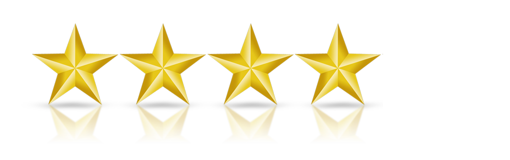

Rating

Sector
Arts & Culture Education Environment & Animals Health Human Services International Public society
Search
Trocaire

Supporting people in the developing world to improve their lives, meet their basic needs and ensure their human dignity. helping communities and families to free themselves from the oppression of poverty.
Concern Worldwide
Concern Worldwide works with the world's poorest people to transform their lives. An international humanitarian organisation dedicated to tackling poverty and suffering in the world’s poorest countries.
Goal
GOAL is currently working in 14 countries: Ethiopia, Haiti, Honduras, India, Kenya, Malawi, Niger, Sierra Leone, Sudan, South Sudan, Syria, Uganda, Zimbabwe and the Philippines.
Focus Ireland
Focus Ireland works with people who are homeless or are at risk of losing their homes across Ireland. They offer individuals, and families, advice, support, education and housing to help people to have and keep a home.
Barnardos
Barnardos works directly with the children and families who need us most, providing services and support in 40 centres around the country. They also campaign for the rights of all children in Ireland, and provide training and knowledge resources to childcare professionals.
Enable Ireland

Supporting people in the developing world to improve their lives, meet their basic needs and ensure their human dignity. helping communities and families to free themselves from the oppression of poverty.
Oxfam Ireland
Concern Worldwide works with the world's poorest people to transform their lives. An international humanitarian organisation dedicated to tackling poverty and suffering in the world’s poorest countries.
Irish Guide Dogs
GOAL is currently working in 14 countries: Ethiopia, Haiti, Honduras, India, Kenya, Malawi, Niger, Sierra Leone, Sudan, South Sudan, Syria, Uganda, Zimbabwe and the Philippines.
Age Action
Focus Ireland works with people who are homeless or are at risk of losing their homes across Ireland. They offer individuals, and families, advice, support, education and housing to help people to have and keep a home.
Irish Red Cross
Barnardos works directly with the children and families who need us most, providing services and support in 40 centres around the country. They also campaign for the rights of all children in Ireland, and provide training and knowledge resources to childcare professionals.